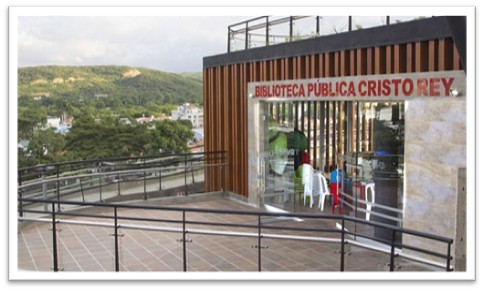
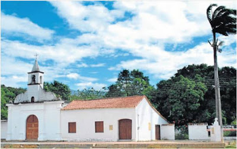
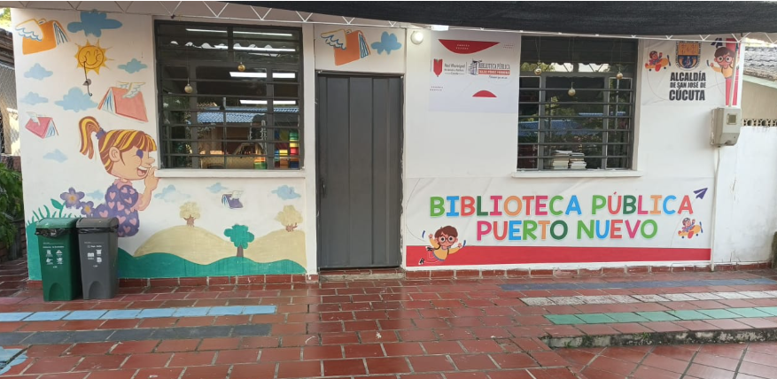
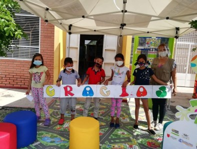
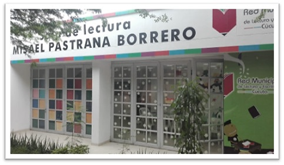
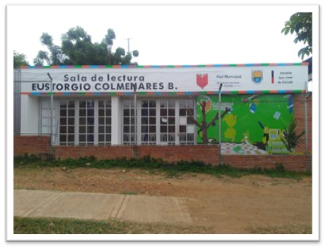
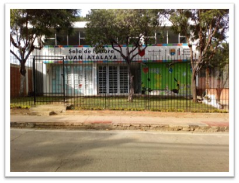
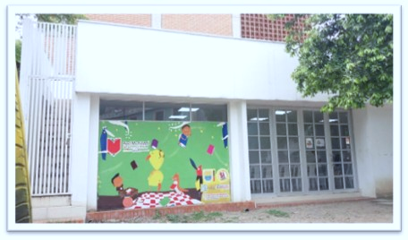
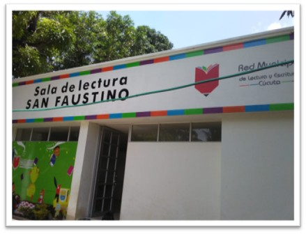
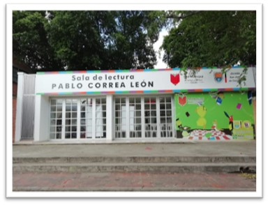

local_library
Biblioteca Pública Simón Bolívar
location_onComuna 7

Red Municipal de Lectura y Escritura
Espacios públicos urbanos y rurales que acercan la lectura, la cultura y el conocimiento a las comunidades de San José de Cúcuta.
Red pública
location_onComuna 7
location_onComuna 9

location_onComuna 10

location_onCorregimiento del Carmen de Tonchalá

location_onCorregimiento de Buena Esperanza

location_onCorregimiento de Agua Clara
Encuentro comunitario

location_onComuna 4

location_onComuna 6

location_onComuna 7

location_onComuna 10

location_onCorregimiento de San Faustino

location_onComuna 3
location_onCorregimiento de San Pedro